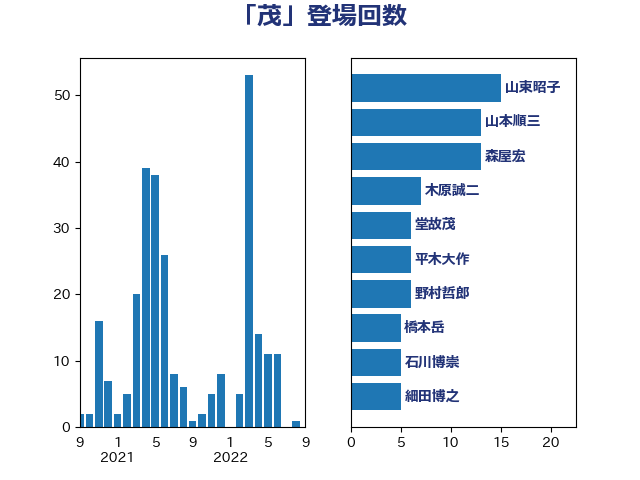

単語「茂」

| 山東昭子 | 自由民主党 | 15 回 |
| 山本順三 | 自由民主党 | 13 回 |
| 森屋宏 | 自由民主党 | 13 回 |
| 木原誠二 | 自由民主党 | 7 回 |
| 堂故茂 | 自由民主党 | 6 回 |
| 平木大作 | 公明党 | 6 回 |
| 野村哲郎 | 自由民主党 | 6 回 |
| 橋本岳 | 自由民主党 | 5 回 |
| 石川博崇 | 公明党 | 5 回 |
| 細田博之 | 自由民主党 | 5 回 |
| 杉尾秀哉 | 立憲民主党 | 4 回 |
| 石井浩郎 | 自由民主党 | 4 回 |
| 石破茂 | 自由民主党 | 4 回 |
| 豊田俊郎 | 自由民主党 | 4 回 |
| 坂本哲志 | 自由民主党 | 3 回 |
| 杉本和巳 | 日本維新の会 | 3 回 |
| 野田国義 | 立憲民主党 | 3 回 |
| 丸川珠代 | 自由民主党 | 2 回 |
| 佐々木さやか | 公明党 | 2 回 |
| 古賀友一郎 | 自由民主党 | 2 回 |
| 吉良よし子 | 日本共産党 | 2 回 |
| 堀内詔子 | 自由民主党 | 2 回 |
| 太田房江 | 自由民主党 | 2 回 |
| 宮崎雅夫 | 自由民主党 | 2 回 |
| 小池晃 | 日本共産党 | 2 回 |
| 志位和夫 | 日本共産党 | 2 回 |
| 打越さく良 | 立憲民主党 | 2 回 |
| 新妻秀規 | 公明党 | 2 回 |
| 有村治子 | 自由民主党 | 2 回 |
| 松下新平 | 自由民主党 | 2 回 |
| 松村祥史 | 自由民主党 | 2 回 |
| 松野博一 | 自由民主党 | 2 回 |
| 矢倉克夫 | 公明党 | 2 回 |
| 舟山康江 | 国民民主党 | 2 回 |
| 野田聖子 | 自由民主党 | 2 回 |
| 青木一彦 | 自由民主党 | 2 回 |
| 馬場成志 | 自由民主党 | 2 回 |
| 馬淵澄夫 | 立憲民主党 | 2 回 |
| 高木かおり | 日本維新の会 | 2 回 |
| 一谷勇一郎 | 日本維新の会 | 1 回 |
| 中司宏 | 日本維新の会 | 1 回 |
| 佐藤信秋 | 自由民主党 | 1 回 |
| 佐藤英道 | 公明党 | 1 回 |
| 吉川ゆうみ | 自由民主党 | 1 回 |
| 吉田忠智 | 立憲民主党 | 1 回 |
| 大野敬太郎 | 自由民主党 | 1 回 |
| 安江伸夫 | 公明党 | 1 回 |
| 宗清皇一 | 自由民主党 | 1 回 |
| 宮路拓馬 | 自由民主党 | 1 回 |
| 小寺裕雄 | 自由民主党 | 1 回 |
| 小林史明 | 自由民主党 | 1 回 |
| 小林鷹之 | 自由民主党 | 1 回 |
| 小沢雅仁 | 立憲民主党 | 1 回 |
| 山下雄平 | 自由民主党 | 1 回 |
| 山田太郎 | 自由民主党 | 1 回 |
| 山田宏 | 自由民主党 | 1 回 |
| 山際大志郎 | 自由民主党 | 1 回 |
| 島村大 | 自由民主党 | 1 回 |
| 平井卓也 | 自由民主党 | 1 回 |
| 末松信介 | 自由民主党 | 1 回 |
| 東徹 | 日本維新の会 | 1 回 |
| 池田佳隆 | 自由民主党 | 1 回 |
| 浅田均 | 日本維新の会 | 1 回 |
| 海江田万里 | 立憲民主党 | 1 回 |
| 牧島かれん | 自由民主党 | 1 回 |
| 田島麻衣子 | 立憲民主党 | 1 回 |
| 磯崎仁彦 | 自由民主党 | 1 回 |
| 福山哲郎 | 立憲民主党 | 1 回 |
| 福島みずほ | 社会民主党 | 1 回 |
| 稲津久 | 公明党 | 1 回 |
| 穀田恵二 | 日本共産党 | 1 回 |
| 細田健一 | 自由民主党 | 1 回 |
| 若宮健嗣 | 自由民主党 | 1 回 |
| 西村康稔 | 自由民主党 | 1 回 |
| 谷田川元 | 立憲民主党 | 1 回 |
| 赤池誠章 | 自由民主党 | 1 回 |
| 高橋はるみ | 自由民主党 | 1 回 |
| 高橋千鶴子 | 日本共産党 | 1 回 |
| 黄川田仁志 | 自由民主党 | 1 回 |